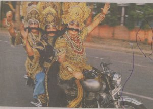

दो अक्टूबर हर वर्ष की भाँति आया और चला गया, गाँधीजी के नाम पर बड़ी बड़ी बातें हुई, राजकुमार हिरानी की फ़िल्म ” लगे रहो… के बाद तो गाँधी जी कुछ ज्यादा ही प्रसिद्ध हो रहे हैं ( जिन लोगों ने गाँधी जी सिर्फ़ नोट पर देखे थे, कभी नाम नहीं सुना), वे भी आज गाँधीगिरी की बातें कर रहे हैं।
पर अफ़सोस की बात यह है कि आज ही के दिन जन्मे एक महान नेता और भारत के पूर्व प्रधानमंत्री स्व. लालबहादुर शास्त्री का भी जन्म दिन है जो किसी को याद नहीं आया !!!!
भारत सरकार के सूचना और प्रसारण मंत्रालय, डाक विभाग के अलावा यूनियन बैंक ऑफ़ इण्डिय़ा सहित कई विभागों ने आज देश के प्रमुख समाचार पत्रों में गाँधी जयन्ति के उपलक्ष्य में बड़े बड़े विज्ञापन दिये पर इनमें से किसी भी विज्ञापन में शास्त्री जी नहीं दिखे।क्या गांधीजी के अलावा देश में कोई महान व्यक्ति पैदा ही नहीं हुआ?
देश की प्रगती में लालबहादुर शास्त्री का कोई योगदान नहीं?
सबको सन्मति दे भगवान
अन्त में आज के The Times of india, Hyderabad के मुख्य पृष्ठ पर छपी एक तस्वीर
कलयुग के रावण
